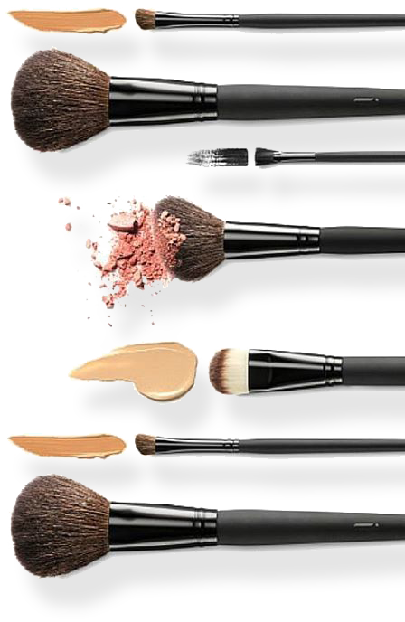
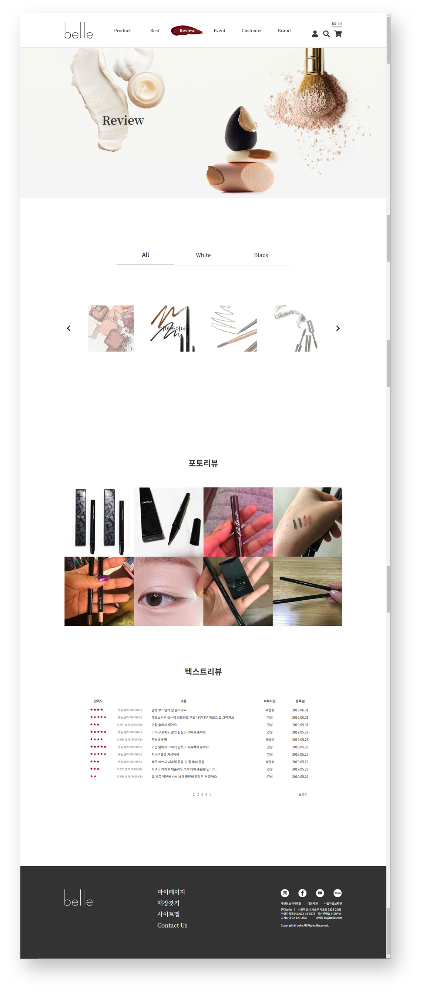
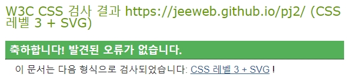

가상 코스메틱 브랜드
기초부터 색조메이크업까지 다양한 제품군 보유
TYPE
Team Project, PC Web
PAGES
Main, Best, Review, Brand
PRODUCTION PERIOD
2019.05.07~2019.06.07
OVERVIEW
4인 1조로 팀을 구성하여 제작한 가상 브랜드 웹사이트입니다.
기초라인(서브 브랜드: belle White)부터 색조메이크업(서브 브랜드: belle Black)까지 다양한 제품군을 보유 하고 있으며, 전국적으로 많은 점포 수를 가진 브랜드로 계획하고 작업하였습니다.
제품 구매유도가 명확히 드러나는 기존 코스메틱 브랜드 웹사이트와는 다르게 브랜드 및 제품 정보를 제공하는 데에 집중하였습니다.
작업한 페이지는 메인 페이지의 일부(2번째 슬라이드, Best)부분과 서브 페이지 중 베스트 제품페이지, 리뷰페이지, 브랜드 소개 페이지를 제작하였습니다.

MAIN
DETAIL #1원페이지 스크롤 구성의 메인페이지로, 베스트 판매 3개 순위, 기초라인(belle White) 신제품 소개, 색조메이크업(belle Black) 소개, 주요 이벤트 안내 컨텐츠로 구성되어 있습니다.
SUB_BEST
DETAIL #2
sub페이지의 상단 header는 스크롤 움직임에 클래스명이 더해져 변화가 일어납니다.
DETAIL #3
백앤드에서 구현하는 부분이지만 프론트 앤드에서 구현해본 부분입니다.
사용자들이 평가한 별점에 따라 class 이름을 다르게 주어, 간단한 코드 작성으로도 각각 별점이 다르게 적용될 수 있게 하였으며, review 페이지에도 동일한 작업을 두번하지 않고 바로 적용될 수 있게 작업하였습니다.
게다가 접근성 향상을 위해 스크린리더에서 읽어 줄 수 있는 보이지 않는 설명글도 추가 하였습니다.(ex. 별점 5점 만점에 3점)
DETAIL #4
더보기 버튼은 웹페이지에서 보여지는 위치와는 다르게 markup은 가장 마지막에 작성하여 스크린리더에서 상위 컨텐츠를 먼저 읽어준 뒤 더보기 버튼을 읽어줄 수 있게 작업하였습니다.


SUB_REVIEW
DETAIL #5
다양한 제품군 중에 원하는 제품의 리뷰를 찾아보기 쉽도록 탭브라우징과 슬라이드를 복합적으로 작성하였습니다. 첫번째 depth 에서 제품라인을 선택 후 해당 라인의 제품군을 선택하면 하단의 포토리뷰와 텍스트리뷰가 변경됩니다.
DETAIL #6
 ◀ 포토리뷰 예시안. 클릭해보세요
◀ 포토리뷰 예시안. 클릭해보세요
포토리뷰는 클릭 시 모달 창으로 사진과 간단한 텍스트 리뷰가 보여집니다. 모달 창이 열려있는 동안에는 키보드의 focus가 모달 내부에서만 이동 될 수 있게 제어 하였습니다. 접근성을 위해 a 링크 태그에는 aria-haspopup="dialog"; 와 title="대화상자";를 속성을 추가해주었으며, 눈에 보이지 않는 '상세보기' 텍스트도 스크린리더에서 읽어줄 수 있게 작성했습니다.
모달 창에도 role속성을 추가해주고 aria-modal="true"(모달창 안내); aria-labelledby="modalTit1"(모달창 내 제목) 속성을 추가로 작성해주었습니다.
◀ 포토리뷰 예시안. 클릭해보세요
좋아좋아
아.. 그냥 진짜 이런색 좋아하면 무조건 사는거에용.. 기존에 스던 섀도우가 품절이라서 다른거 찾다가 요거 맘에 들어서 테스트 했는데..
걍 사야됨
펄이 조금만 덜 들어갔으면 하는..
그래도 스파클링 좋아영
nogs*** (여성/21세/건성)
SUB_BRAND
DETAIL #7White와 Black 라인을 소개하는 버튼을 클릭하면 해당 라인을 소개하는 내용이 하단에 등장합니다.
스크롤 시 배경은 고정되고 텍스트만 fade로 등장하고 사라지게 제어하였으며 모든 텍스트가 등장 하면 다시 브라우저의 스크롤이 작동하도록 스크립트로 제어 하였습니다
유효성 및 접근성 검사

W3C Markup
CSS Validation
- 

OpenWAX